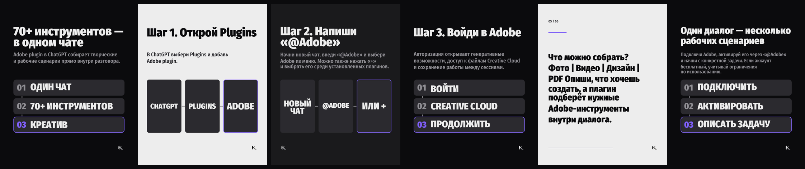

THU 6 AUG · ai_hack · slot 1
You can use 70+ Adobe tools without leaving ChatGPT now - here's how

- [hook]
- [step]
- [step]
- [step]
- [result]
- [takeaway]
caption / control text
🖼 <b>INSTAGRAM · КАРУСЕЛЬ</b> · v1 (6 слайдов) Adobe plugin теперь доступен в ChatGPT: подключаешь его через Plugins, запускаешь через «@Adobe» или кнопку «+» — и описываешь, что хочешь создать. Внутри можно работать со сценариями для фото, видео, дизайна и PDF. Вход в Adobe открывает доступ к Creative Cloud и помогает продолжать работу между сессиями. Важно: у бесплатных аккаунтов будут ограничения по использованию. Сохрани маршрут: Plugins → Adobe → «@Adobe» → задача. <b>ТИП:</b> NEWS <b>ПОЧЕМУ СЕЙЧАС:</b> Новость дает конкретный сценарий, который можно превратить в сохраняемую инструкцию: подключить Adobe в ChatGPT и пройти путь от запроса до готового креатива. <b>ЦЕННОСТЬ:</b> Аудитория получает понятный workflow для создания визуалов, видео и документов без переключения между несколькими сервисами. <b>УГОЛ:</b> Как подключить Adobe в ChatGPT и собрать первый креатив за один диалог. <b>ФОРМАТ:</b> Карусель лучше подходит для пошаговой инструкции: каждый слайд может объяснять отдельный этап подключения и создания результата. <b>ПРОДУКТ:</b> нет <b>СИГНАЛ:</b> нет <b>ОБОСНОВАНИЕ СИГНАЛА:</b> нет <b>ДУБЛИКАТЫ:</b> no recent or in-flight item has the same canonical story and material angle, nor the same premise on another story <b>КРЕАТИВНАЯ ИДЕЯ:</b> Путь от пустого чата до готового креатива через три понятных действия: подключить, активировать, описать задачу. <b>ФОКУС:</b> Конкретные команды и меню, которые превращают новость про 70+ инструментов в повторяемый workflow. <b>МЕДИА:</b> graphic <b>ПОЧЕМУ ТАК:</b> Единственный доступный источник — текстовая карточка, непригодная для финального визуала; substantive flow diagrams and option cards can show the workflow clearly without inventing UI. <b>КОМПОЗИЦИЯ:</b> Чередовать тёмные акцентные карточки с лёгкими utility-слайдами; крупный headline, затем один понятный graphic path or option stack. <b>ВИЗУАЛЬНЫЙ ПОДХОД:</b> A recurring route-map motif: bold nodes, arrows and selectable cards, with changing density from the numerical hook to the sparse closing action. <b>БРЕНДИНГ:</b> Controlled NINJA red accents, canonical logo in a clear corner, condensed heavy headline voice and restrained supporting text. <b>ИЗБЕГАЕМ ПОВТОРА:</b> No recent Instagram content is available; avoid treating the unsuitable article card as a hero or using it as the carousel's primary visual.